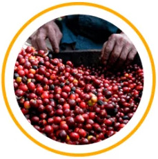

L''alta probabilità di infezione da virus è direttamente correlata alla presenza di
parassiti nel nostro corpo! Gli “ospiti" non invitati che si trovano all'interno
distruggono l'immunità. Data l'emergenza epidemiologica di oggi, il problema della
soppressione dell'immunità diventa particolarmente rilevante. Va ricordato che l'apatia,
la stanchezza e l'ansia possono essere non solo una conseguenza di una situazione emotiva
difficile e di una manifestazione dell'avitaminosi, ma anche una conseguenza
dell'infestazione da vermi.
Come si possono prendere i parassiti?

Frutta, verdura e frutti di bosco non adeguatamente lavati
Mani sporche
Carne e pesce poco cotti
Animali domestici
Gli elminti che parassitano il corpo umano non solo causano disagi, ma indeboliscono anche
le difese immunitarie, esacerbano le patologie croniche, portano alle reazioni allergiche.
La loro presenza si manifesta in disturbi della funzione motoria e secretoria del tratto
gastrointestinale, sviluppo di disturbi disbiotici, segni di intossicazione cronica.
È noto che gli elminti secernono sostanze tossiche che entrano nel sangue e si diffondono
in tutti gli organi e tessuti umani. La presenza di elminti nel tratto digestivo può
alterare l'acidità del succo gastrico e portare a vari disturbi del sistema epatobiliare. Così
soffre il sistema nervoso centrale, poiché i parassiti, che si trovano nell'intestino e in
altri organi interni, irritano le terminazioni nervose, molto sensibili a stimoli meccanici,
termici, chimici e altri.
carne di maiale/capra/agnello cruda/poco cotta contaminata, latte non bollito
contaminato, acqua o terreno con spore dalle feci di un gatto che hanno più di un giorno
interazione a livello cutaneo, inclusi rapporti sessuali; attraverso indumenti
contaminati o biancheria da letto
Purtroppo, gli elminti hanno anche un effetto immunosoppressivo abbastanza potente sul
sistema immunitario, e la sua risposta è debole e instabile. Questo influisce
negativamente sulla sensibilità di una persona alle infezioni batteriche e virali,
riduce l'efficacia delle misure preventive, esacerba il decorso del disturbo. Le patologie
parassitarie sopprimono la risposta immunitaria, portando allo sviluppo di immunodeficienza
secondaria.
Con l'infezione da elminti, il corpo umano attiva tutti i meccanismi protettivi,
tuttavia, in alcuni casi in cui non si riesce a far fronte ai parassiti per molto tempo, le
risposte immunitarie vanno oltre i limiti di un'adeguata risposta fisiologica e diventano
immunopatologiche, il che può portare a disturbi del funzionamento di vari organi.
A causa di tali processi distruttivi, l'uomo diventa il più vulnerabile possibile ai virus e
soffre tanto dell'infezione.
La presenza di parassiti nel corpo influenza direttamente la resistenza
del corpo ai virus
A causa dell'elevata carica virale nel mondo, qualche anno fa, gli scienziati tedeschi
dell'Istituto di innovazione di Amburgo hanno annunciato l'inizio dello sviluppo di un
rimedio che può aiutare a sbarazzarsi dei parassiti, ridurre al minimo le possibilità di
reinfezione, sostenere e rafforzare le difese immunitarie.
Il risultato dello sviluppo e del lungo lavoro è stato l'innovativo rimedio che è stato presentato al simposio scientifico internazionale.
Quando il team dell'Istituto di innovazione di Amburgo ha mostrato i risultati della sua
efficacia, i partecipanti sono rimasti piacevolmente stupiti.
è un complesso antielmintico ad alto contenuto di
ingredienti naturali, i quali si integrano e si rafforzano a vicenda e creano anche un
meccanismo di protezione che aiuta a evitare la reinfezione.
Il team di scienziati ha lavorato per molti anni allo sviluppo del
prodotto
Gli estratti vegetali contenuti in questo rimedio contribuiscono a distruggere vermi,
funghi e parassiti intracellulari e anche grazie ad alto contenuto di fibre assorbono
e aiutano a rimuovere le tossine rilasciate dagli elminti. Il prodotto contiene un
amminoacido tossico per la maggior parte delle varietà di parassiti, a causa del quale si
indeboliscono rapidamente e cessano di essere trattenuti sulle pareti dell'intestino, senza
compromettere il benessere umano.
I componenti attivi consentono di distruggere i parassiti adulti e sciogliere il guscio
delle uova di elminti, avendo un effetto paralizzante sul loro sistema nervoso. Inoltre,
sostengono il funzionamento del fegato - un organo disintossicante naturale, rafforzano il
sistema immunitario.
Tutta la comunità internazionale ha accolto con standing ovation questo nuovo e unico
sviluppo e anche il team che ci ha lavorato.
La nostra redazione si è interessata al complesso e
abbiamo chiesto a uno specialista di commentare il meccanismo della sua azione.
Victor Peeters - specialista in infettivologia
"Per me, è estremamente strano che la gente non capisca il vero
pericolo e la minaccia per la salute che comportano i parassiti. Se non vengono
eliminati tempestivamente, rappresentano una seria minaccia al corpo. Disturbi del
funzionamento degli organi interni, problemi della pelle, della vista, deterioramento del
funzionamento degli organi digestivi, abbassamento delle difese immunitarie e attivazione
delle patologie croniche.
Il corpo deve essere pulito dai parassiti il prima possibile!
Tra tutti i rimedi esistenti al momento, il più efficace nella mia
esperienza è stato . Questo complesso unico aiuta a
depurare il corpo, distruggere la maggior parte delle specie di elminti, agendo
delicatamente, senza disturbare la flora intestinale. In più, grazie ai componenti
attivi, aiuta a rafforzare l'immunità e prevenire la reinfezione.
I principali vantaggi di questo rimedio che ho evidenziato per me
stesso:
aiuta a distruggere la maggior parte delle specie di parassiti
aiuta a migliorare il funzionamento del tratto gastrointestinale e stabilizza l'appetito
consente di riparare la mucosa intestinale danneggiata
aiuta ad alleviare l'intossicazione da elmintosi
riduce il numero di infezioni ripetute
supporta il rafforzamento del sistema immunitario”
Dopo le raccomandazioni, i nostri giornalisti hanno contattato il distributore per scoprire
come ordinare . Si è scoperto che non è ancora
disponibile sul nostro mercato per colpa della "mafia delle farmacie"! I monopolisti, i
grandi marchi farmacologici non traggono profitti dai rimedi che danno un risultato così
efficace, poiché la domanda per i loro prodotti diminuirà in modo significativo. E si
tratta di fatturati miliardari! Le vendite di sono
semplicemente bloccate tramite i rapporti corrotti dei rappresentanti delle
"strutture ombra". Nel magazzino del produttore è rimasto l'ultimo lotto che può
essere acquistato solo prima del . Affrettatevi a ordinare in
questo momento finché è possibile.